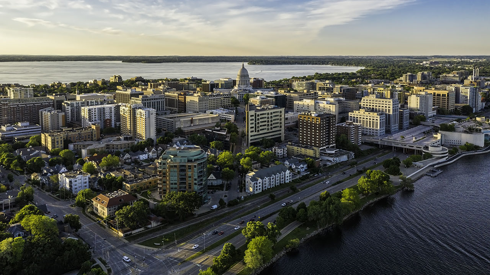
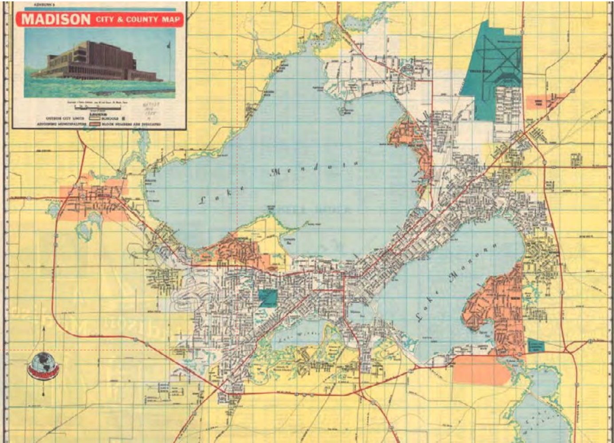
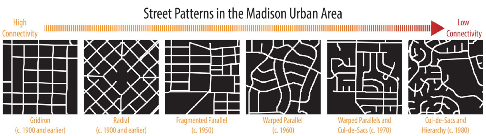
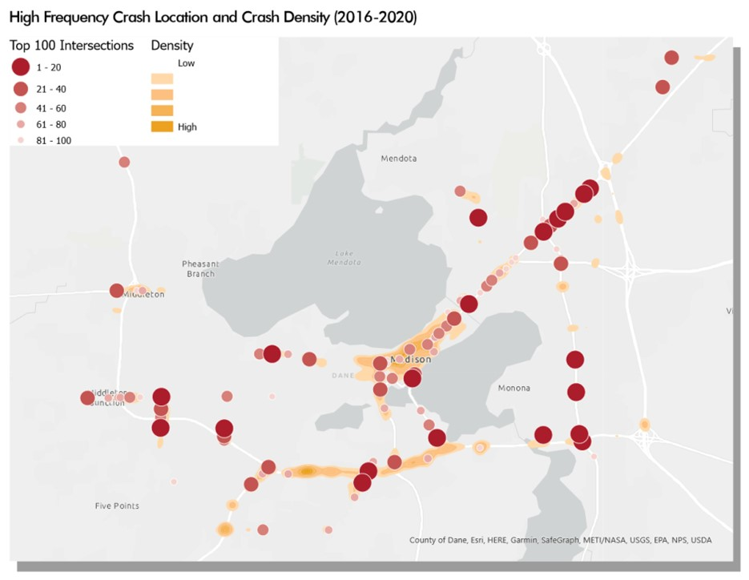
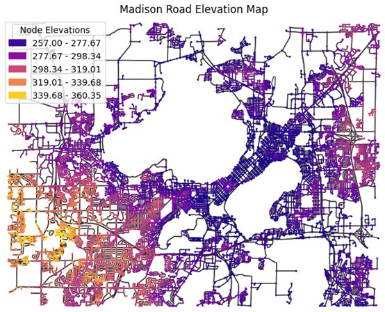
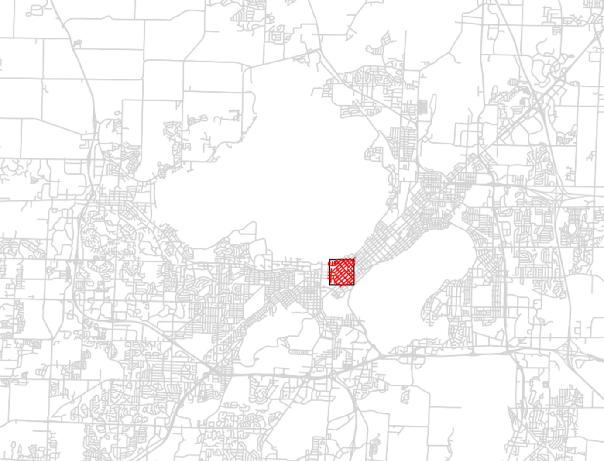
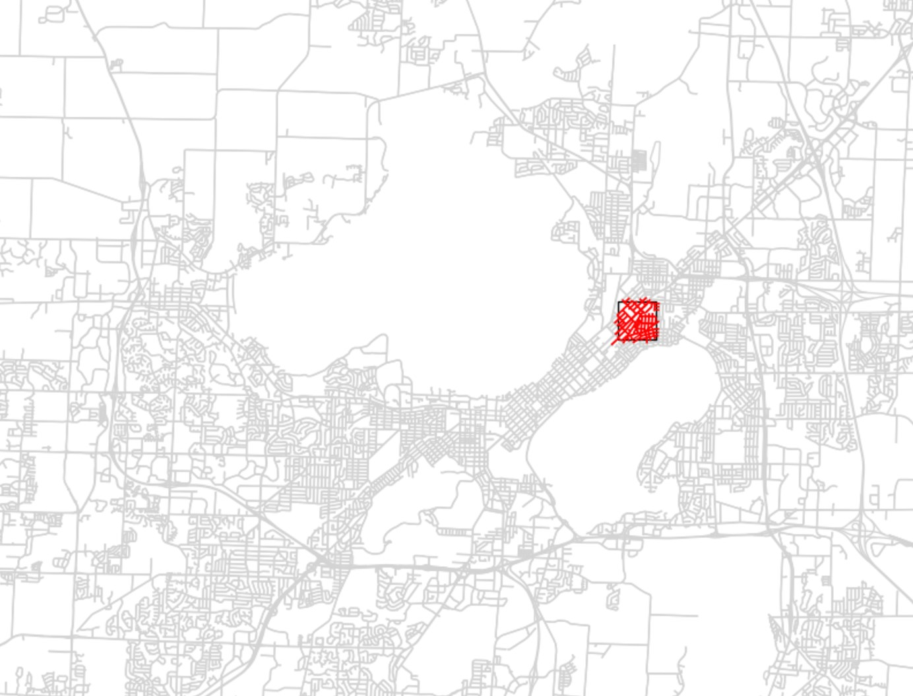

The Madison, WI Road Introduction

Brief Instruction to Madison, WI ,
Madison is the capital of Wisconsin, U.S., Wisconsin's second largest city. According to “Connect Great
Madison
2050 Regional
Transportation Plan”, the Madison is growing very fast. From 2000-2020 the Dane County population grew by 32%,
That's an increase
of about 135,000 people. Between 2020 and 2050, Madison's population is projected to grow by another 178,000,
bringing the total
population to 739,000. Undoubtedly as the population grows, so too does the inevitable increase in traffic.
Therefore,
it is important and necessary that Madison's roadway network be structured to accommodate the rapid growth in
population and traffic.
More importantly, it is important to maintain the efficiency of rapid emergency response in the face of
growing
population and traffic.

Figure 1. Madison Map
Madison City Road Introduction
The region's transportation system provide critical connections to commerce, health care,
as
well as quick and
efficient movement of goods and services. According to the Madison Transportation Department, there are over
2800 miles of public
roadways in Madison Metropolitan Area and close to 550 bridges.
The Madison city has a uniquely constrained roadway system due to the natural geography of
the area , with the
City of Madison's downtown sitting on an isthmus. Madison is centered on the state capitol and is expanding in
all directions.
However, the capitol is flanked by two very large lakes, Lake Mendota and Lake Monona. These two lakes divide
Madison's land area
into east and west and are connected by a long release parcel of land, which creates a great deal of pressure
on
Madison's traffic flow.
During the planning process for Madison, the planners designed a number of different roadway patterns, similar
to Gridiron and Radial,
as shown in figure 2. The different patterns have varying degrees of roadway connectivity, which provides some
relief from the heavy traffic
pressure.

Figure 2. Road Patterns
However, the amount of car accidents remains high each year, despite
continuous improvements
to the road network.
According to the Madison Transportation Department, the total number of crashes in Madison in 2021 reached
3,161, with interaction crashes
reaching 2,162 and the number of injuries to people reaching 1,164. This means that with an increasing
population and traffic, Madison's road
network is still under very high pressure to meet people's needs. As you can see from our crash map, the high
volume arterials including the
State Capital Office area, East Washington Ave, and W Beltline Hwy have the highest crash frequencies. What's
more, crash densities are
concentrated in the State Capital area, which has a narrow topography that puts a lot of pressure on east-west
transit connections.
Therefore, in this case, in addition to proper planning and roadway improvements, it is very important to
ensure
that emergency response
is efficient, which will bring a great deal of security to people's lives.

Figure 3. Crash Location and Crash Density
Due to the uniqueness of Madison's topography, which is
adjacent to two lakes, the
likelihood of natural disasters such as flooding.
For instance, is greater compared to other cities. In this case, it is also important to familiarize yourself
with the topography of Madison.
As we can see on the map, the middle area between Lake Mendota and Lake Monona is the lowest and the west side
of Madison is higher than the east side.
Therefore, if a disaster such as a flood occurs, the first area of the road network to be damaged is the
middle
area between the two lakes.
People should avoid that area. According to another study I did, when the water level in Madison rises to 1.49
meters, this will have a greater
impact on the connectivity of the road network.

Figure 4. Madison Elevation Map
Madison Road Network Analysis
Efficient emergency response is critical in urban areas to ensure the safety and well-being
of residents during emergencies.
This projects aims to evaluate the emergency response routes for various types of emergencies (e.g., police,
fire, ambulance) by analyzing the existing
road network and traffic conditions. This is especially true for Madison, where the roadway network is limited
not only by topography, but also by
the pressures of traffic congestion and the effects of the harsh environment. All other things being equal, this
project evaluates how much the level
of traffic congestion affects the efficiency of emergency response.
For our analysis, we used python packages such as OSMnx and NetworkX to construct the road
network and assign values to the network, such as road speed limits and traffic flow data.
Then a square area in Madison with a high level of traffic congestion (as shown in the figure) was selected to
calculate the average time to the nearest hospital for each road point in the area.
Thus to compare the efficiency of emergency response in the presence or absence of traffic congestion.
Determining and assigning the effect of traffic flow on car speed and response time is a
very important issue in the calculation process. We use the formula Speed = (1-Traffic_data / Traffic_data.max)
* Speed_Limit. This means that the project assumes that the car travels at the speed limit of the road when
there are no cars on the road. When the traffic flow is at its maximum, the speed of the car is 0 km/h.
In other words, the traffic flow is used to redistribute the speed of each road. Then we can calculate
the effect of traffic flow on response time.
By calculating the response time, the project found that for a square of 1,000 meters
around the state capital (Figure 5), the average time for the nearest hospital to arrive at the incident
location was
716 seconds when considering traffic. The average time for the nearest hospital to reach the incident location
without considering traffic is 670 seconds. This means that traffic conditions negatively impact response times
by 46 seconds. For the 1,000 meters box around East Highway 151 (Figure 6), the average time for the nearest
hospital to
reach the incident location is 937 seconds when considering traffic. When traffic is not considered, the average
time to reach the incident location is 886 seconds. This means that traffic has a negative impact on response
efficiency of 51 seconds. As we can see, traffic has a negative impact on response times of roughly 1 minute.
However, according to the policy, the optimal emergency response time is 300 seconds or 5 minutes.
Therefore, 1 minute still has a large impact on emergency response time requirements.

Figure 5. Selected Roads 1

Figure 6. Selected Roads 2